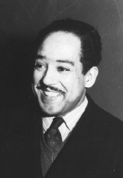

Ben de Amerika’yı överim.
Ben en esmer kardeşiniz.
Misafirler geldiği zaman
Mutfağa gönderiyorlar yemekte beni.
Ama ben buna gülüyorum
Karnımı doyuruyorum güzelce
Büyüyüp kuvvetleniyorum.
Ben de Amerika’yım.[10]
Yarın
Masanın başına geçip oturacağım
Misafirler geldiği zaman
Kimse cesaret edip de
“Hadi sen mutfakta ye”
Diyemeyecek.
Bir hoş görüverecekler yanlarında beni
Utanacaklar da...

Langston Hughes’un “Ben de” (1926) adlı şiiri, 1920’ler sırasında oluşan Afro-Amerikan kültürel farkındalığın ve sanatsal üretkenliğin yeniden oluşumunun, Harlem Rönesansı’nın büyük şiirlerinden biridir. Serbest nazımın incelikli birkaç satırında bile Hughes, hem siyahilerin Amerikan toplumunda ikinci sınıf konumlarının üzücü gerçekliğini hem de geleceğe dair taşıdığı kendine güvenli iyimserliğini ifade eder.
“Ben de”, Walt Whitman’ın “Amerika’ya Övgüyü Dinliyorum” (1881) şiirine doğrudan bir göndermedir. Whitman, Amerika’yı oluşturan farklı seslerin – tamirci, marangoz, anne ve diğerleri – ihtişamlı ahenksizliğini yazmıştı. Hughes, şiirinde bir büyük sesin unutulmuş olduğunu ve bu yüzden Whitman’ın övgüsünün eksik olduğunu ileri sürer.
Hughes’un şiirinin gücü, minimal, doğrudan olan dilinden kaynaklanır. Anlatıcı, cesur bir beyanla başlar: “Ben de Amerika’yı överim.”, vurgu için kendi kıtasını teşkil eder, sonrasında kimliğinin gururlu, süslenmemiş bir iddiası takip eder: “Ben en esmer kardeşiniz,”, “Mutfakta yeme”nin ayrımcılığının ve eşit olmayan fırsatlarının tüm çeşitleri için kullanıldığı kapsamı genişletilmiş bir benzetme olan Amerika “masa”sındaki yerinin nasıl inkâr edildiğini tarif eder.
Ama anlatıcı, tam olarak küskünlük veya öfke göstermez. Daha ziyade onu adam yerine koymayan tutumlarla dalgasını geçer ve tahammül gösterdiği aşağılanmaya bakmaksızın güçlü ve güzel olduğuna dair güvenle doludur. Ayrıca kendi gücü ve başarısının kaçınılmaz olarak Amerika’nın geri kalanının duyularını hissetmesine neden olacağından emindir. Son satır, açılışı küçük ama önemli bir değişiklikle tekrarlayarak şiiri bir bütün haline getirir. Anlatıcı, içinde yaşadığı ulusun gerçek bir parçası, hem özgürlüklerde hem de sorumluluklarda eşit bir ortak olarak bir gün dikkate alınacağına ikna olarak “Ben de Amerika’yım.” der.
EK BİLGİLER:
1. Hughes “Nehirlerden Söz Eden Zenci” adlı ilk önemli şiiri “NAACP’s Crisis” dergisinde yayımlandığı zaman olan 1921’de üne kavuştu.